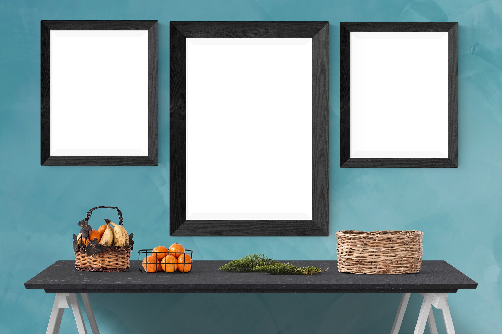

Realismo
- 


Arte pop es un movimiento artístico surgido en Reino Unido y Estados Unidos a mediados del siglo XX, inspirado en la estética de la vida cotidiana y los bienes de consumo de la época, tales como anuncios publicitarios, comic books, objetos culturales «mundanos» y del mundo del cine. El arte pop, como la música pop, presenta una forma de ver y tratar el arte, más global y social, no para pocos (elitista), sino para todos (popular),al utilizar imágenes populares en oposición a la cultura elitista existente en las Bellas Artes, separándolas de su contexto y aislándolas o combinándolas con otras, además de resaltar el aspecto banal o kitsch de algún elemento cultural, a menudo a través del uso de la ironía.
El arte pop es comúnmente interpretado como una reacción a los entonces dominantes ideales del Expresionismo abstracto. De cualquier forma, el arte pop también es la continuación de ciertos aspectos del expresionismo abstracto, tal como la creencia en las posibilidades de hacer arte, sobre todo en obras de grandes proporciones. Del mismo modo, el arte pop era una extensión como un repudio del Dadaísmo.
El movimiento urbano que constituye el arte pop, al contrario que el Expresionismo abstracto, pretende unir arte y vida mediante el enfriamiento de las emociones. Tiene el propósito de reflejar la superficialidad de los elementos de la cultura de masas en sus obras, es decir, toma productos de consumo accesibles para todos y los representa. Con esto se destaca la inexpresión y la impersonalidad del objeto, alejándose de cualquier tipo de subjetividad del artista.
Por otro lado, la repetición es una característica que abunda en este movimiento ya que en los medios de comunicación se usa como método tanto como para crear iconos como para anestesiar a la sociedad sobre problemas graves. Por lo tanto, en este punto de la historia del arte, el arte ya no imita la vida, sino que es la vida que imita el arte o la imagen.
El arte pop y toda su controversial estética y postura ante la realidad, además, suponía una reacción frente a los cánones de las bellas artes tradicionales, del mismo modo en que la música pop constituyó en su momento un gesto de ruptura a los preceptos tradicionales de la música.